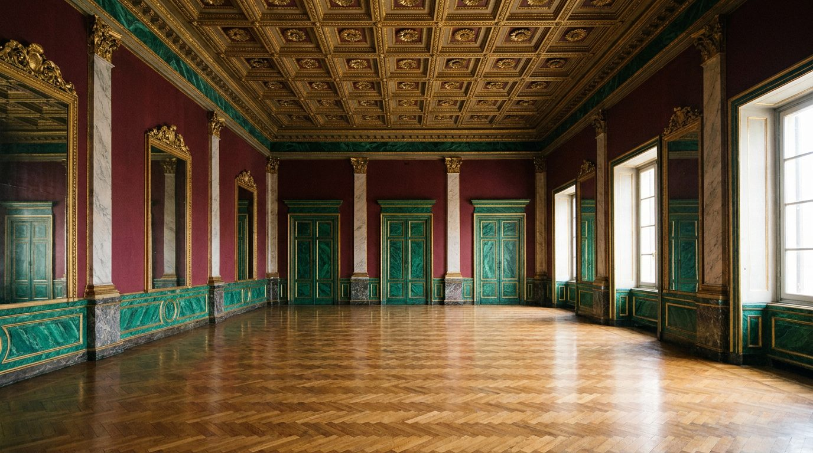

Atlante · IT-02 · Italia · Centro
Palazzo ottocentesco da ballo (saloni di rappresentanza)
Esempi · esterno e interno


Architettura · elementi riproducibili
- sequenza di saloni in enfilade, altezza 6-7 m, soffitti a cassettoni o affrescati con cornici dorate
- pareti bordeaux o verde malachite con boiserie
- pavimenti a mosaico o graniglia con bordure
- grandi specchiere con cornici intagliate
- tendaggi pesanti a tutta altezza
- lampadari in cristallo e ottone
- Proporzione: ambienti larghi e bassi rispetto al palazzo cinquecentesco, molta superficie di parete.
Luce
luce alta da finestre a ovest, controluce dorato nel tardo pomeriggio; interni leggibili ma con caduta verso gli angoli.
Prompt di generazione (EN)
19th-century Roman palazzo ballroom, 6.5 m coffered ceiling with gilded cornices, deep bordeaux walls with boiserie, mosaic floor with geometric border, tall mirrors, heavy velvet curtains, warm golden late-afternoon backlight from tall west windows, symmetrical composition, 35 mm.
Riferimenti reali
- Palazzo Brancaccio, Roma apri ↗